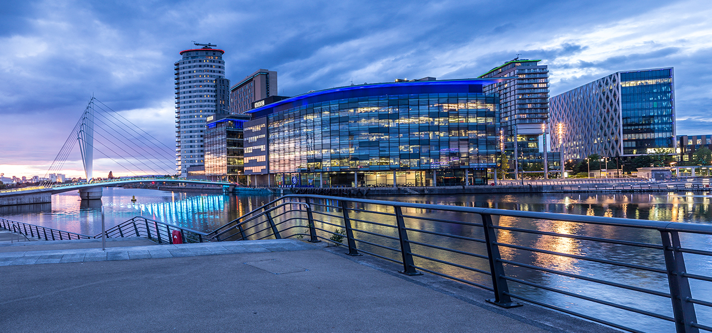
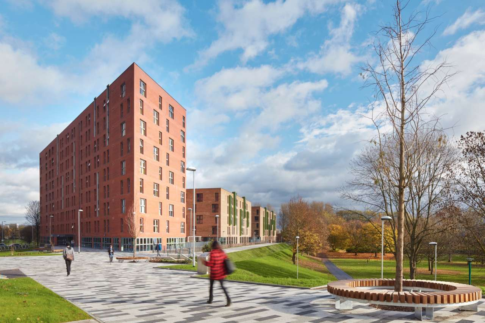

England's Salford Quays is a lively water frontage area. There are a lot of reasons why someone would want to come here. The different things to do that Salford Quays offers that draw both tourists and residents will be discussed in this article.
One of the reasons why u should visit Salford Quays is MediaCityUk which was made in 2011,its a plan to improve the area and to create MediaCityUk as the centre of media and other technology business including the building of MediaCityUK. even tho the BBC int he north has provides information about the BBC's support of MediaCityUK's development and its effects on the local media market. It served as a tool for understanding the BBC's significance within the framework.
Outdoor Activities is another reasons why you should people visit Salford Quays.In outdoor activities Salford provides green space that offers free time and it benefits the community members and tourists.The Green space includes parks, gardens and some other natural areas. Walking, Cycling, and picking and some other outdoor activities people can do. on of the most popular is peel park it has woodlands and a lake it also provides a high quality parking services that is more safer then the other local car parking because the have over 900 parking spaces including parking sports.
Peel Park provides free green spaces for people to walk and other activities it also includes lakes and playground for children, and some other ares for events and gatherings. One of the features of peel park is its water features, the park is home of lake and this is the beauty of the peel park.
Peel Park also has an important community space in Salford with wide rang of social activities and good time for relaxation and enjoyment. The park is Managed by Salford City Council, which continues to invest in its maintenance and development to maintain its value.
